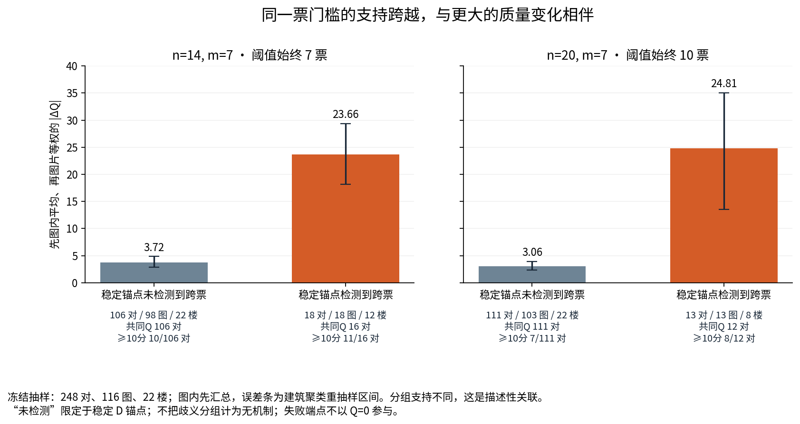

当前 DSTRUCT 直接 AC：机制、局部结构与正反实例
核心结论
这轮证据支持三种不同的变化路径：局部支持票跨过固定门槛后改变所选结构；所选节点和连接不变但位置、方向、范围或上下边界改变；各局部均过票，却没有一份实际原答提供覆盖全部所选节点的完整来源环。 它们都能改变最终结果，不能只用节点数量或总分判断发生了什么。
在事先按哈希固定、未以 Q/GT/成功状态筛选的 248 对诊断样本中，检测到稳定 D 锚点跨票的组，图片等权平均绝对 Q 变化明显较大：14/7 为 23.663 对 3.716 分；20/7 为 24.815 对 3.059 分。这是存量团队上的描述性机制关联。跨票与困难结构、类别组合、分组改变存在重叠，结果不等于独立操纵票数的因果效应。分层后，关联并非只发生在困难图或某一个类别对，但小层支持需要逐一看清。诊断样本协议、关联统计
正反实例也给出了明确边界。困难图中，增加一个恰当凹角可以同时改善底面范围和方向，Q 增加 35.435 分；另一个相同预算、方向和难度的案例，参考角点召回从 5/14 提高到 9/14，却因整体范围和方向变差而下降 9.678 分。一个 20/7 案例则在四个节点都保持 20 票、D 对应与连接都不变时，Q 增加 15.171 分。这些结果支持研究人员类型如何改变几何表达，不要求每次替换都升质。案例分项、完整离线图册
1. 本模块实际做了什么
本模块只分析当前 DSTRUCT 的直接 A/C，不新增联盟、固定配比、人数曲线、RFUSE、JOINT 或 Q/T 选队。输入主版本是仓库 Sparkling-Flames/3D_Manhattan_label 的 main 提交 48a2fc6aedd51cd701b1bce06c02bd3ef92ec75b。当前合法事件由本轮 registry 提供；类别按目标图片所在建筑对应的 TARGET_DSTRUCT_K3 楼外标签绑定，D 允许混合类别。历史事件、端点和原始身份保留，不把筛选后的存量队伍称为按当前类别重新均匀抽样。
几何输入来自正式 research/data/releases/v2.1/pools/INPUT_SNAPSHOT.json 中已经预处理并冻结的人员原答；保留 object_id、source_pair_indices、source_point_indices 及原保存顺序。原图只用于对照展示，不从图上重新取点，不再次排序原答。案例里的参考直接复制对应池的参考快照，既可能是 gt_original，也可能是已采用的用户目标；每页显示实际 reference_id 和 reference_version。
具体执行了：
- 从原目标、普通 Manual、当前标签合法的历史 AC 中，以每个
n/m × pool × 无向类别对一个物理对建立机制样本。14/7 与 20/7 分别处理；在 3,560 个候选物理对中，按sha256('202611041302|' + canonical_pair_id)选择每格最小值。冻结后才加载效果解释。 - 恢复 496 个既有端点，逐个原生重放，只为了获得完整组、票数、来源顺序和候选环诊断。保存的科学端点核心分数和几何保持原值。
- 为后验展示按固定覆盖规则选 12 对案例；其中 12 个端点已在诊断缓存中，额外重放另外 12 个既有端点。全部 508 个端点均是历史已算团队，新增物理团队为 0。
- 从已发布 Release 恢复 11 张 AC 原图，再恢复 1 张第 12 批既有 ABC 附录原图，按索引的尺寸、解压字节数和 CRC 验收。图片字节未改动。
- 生成完整逐人原答、D/X/Z、当前楼外标签、合法记录劳动、原生票账、精确/歧义对应、来源环和参考的离线 HTML，以及 PNG/SVG 科学图。第 12 批 ABC 只复制原保存数据，不重算 GS，不纳入本轮 248 对机制分母。
正式样本前还对另一个历史既有团队做了 1 次运行成本/一致性先导核验，单独保留 source/PILOT_REPLAY_PARITY.json，不进入样本、病例或统计。因此本模块成功记录的旧端点原生诊断重放为 496 + 12 + 1 次；正式交付的样本/病例联合trace为508个，先导不增加任何科学团队。
496 个诊断端点的保存几何 JSON 哈希全部与原生重放一致；ERP 坐标、节点身份/顺序、状态、Q 可用性均一致。最大评分字段浮点差为 7.1054e−14，属于数值舍入；正式统计仍用原保存值。24 个案例端点也全部通过同样验收。样本重放验收、案例重放验收、原图验收
2. 机制判据：什么可以对应，什么不能对应
2.1 精确 D 观察锚点
在 A 和 C 的每个原生对应组中，提取属于共同背景 D 的原答观察，观察键为 (object_id, source_pair_index)。两组只有在包含完全相同、非空的 D 观察集合时，才建立稳定跨队对应。局部 node_003 等组编号不能跨队充当同一节点；接近同一参考角点、坐标相近，也不能代替该判据。
这个“精确”指原生分组中的 D 观察身份和集合精确保持，不宣称已经证明所有组成员属于同一个真实物理角点。若一侧 D 集合在另一侧发生拆分、合并或重分配，保留交叠观察的全部链接，标为有歧义，不据此计算精确节点位移或判定某个同节点跨票。
同时计算 D 观察两两是否仍在同组。这个判据对组编号重命名不敏感；可直接检查“共同背景未换人，但他们在全团队中的对应分组是否改变”。实现、完整 D 观察链接
2.2 固定门槛与实际跨票
原生 MV50 门槛为 ceil(n/2)：14 人队始终为 7 票，20 人队始终为 10 票。在本轮固定 n 的 A/C 内，名义门槛没有改变。 稳定组的实际支持从门槛下到门槛上，或者从门槛上到门槛下，才称作跨票。偶数队中，恰好半票已经可以入选。
若没有检测到稳定锚点跨票，只能说在稳定映射部分未检测到；不能把有歧义的分组或不能映射的节点当作“机制不存在”。诊断表保留这部分覆盖缺口。
2.3 连接判据
现有引擎使用完整投影来源环：把一份实际人员原答的保存顺序投影到本队入选组，要求至少 3 个组、投影长度等于所选组数、没有重复，并且覆盖全部所选组。source_ring_covering_all_selected_n 是满足这个判据的原答条数。
因此该计数为 0 表示当前来源环规则没有完整候选，不是数学上不存在任何可能拓扑。仅当两端全部入选组都能稳定一一映射、所选锚点集合相同，且双方均有环时，才比较环的无向邻接关系，避免把起点改变、环反向或局部组编号变化误判为拓扑变化。
本样本中可按这一严格规则比较的 14/7 有 102 对，20/7 有 97 对，均未发现环邻接变化。其余对包括所选节点集合改变、对应不完整或无环，不能一概写成“连接没变”。环可比支持与状态
3. 样本规模与对应覆盖
每个预算各有 124 对，覆盖相同的 116 张图片、22 栋建筑；两个预算的物理对不互作独立重复验证。正反方向是同一物理对取反，诊断只计一次。
| 类别对 | 每预算物理对 | 图片 | 建筑 | 支持特点 |
|---|---|---|---|---|
| C1↔C2 | 39 | 39 | 13 | 有支持，跨票子组主要集中在少数建筑 |
| C1↔C3 | 4 | 4 | 3 | 稀少；两预算样本均未检测到稳定跨票 |
| C2↔C3 | 81 | 81 | 21 | 主机制支持来源，具有难度分层 |
以上是每个类别对的支持，不能把三行图片数直接加成不同图片总数。样本容量
14/7 的状态为122对双端可评、1对少于4节点→可评、1对可评→无连接；20/7 为123对双端可评、1对少于4节点→可评。后者都是输出支持改变，不作为原共同支持的Q提升。两个预算的失败数也不能直接当成不同图片数相加。原生状态转移
| 对应覆盖 | 14/7 | 20/7 |
|---|---|---|
| 稳定 D 锚点链接 | 672 | 701 |
| D 拆分/重组等歧义链接 | 53 | 79 |
| A 入选节点实例 | 571 | 568 |
| C 入选节点实例 | 611 | 585 |
| A 未获稳定映射的入选节点 | 16 | 18 |
| C 未获稳定映射的入选节点 | 20 | 22 |
| A 有此覆盖缺口的端点 | 11 | 16 |
| C 有此覆盖缺口的端点 | 13 | 18 |
| 至少一端有覆盖缺口的物理对 | 13 | 18 |
两预算中，“入选节点完全没有 D 原答观察”的数量均为 0；覆盖缺口来自 D 观察集合拆分/重分配，不能简单按空间最近组硬配。表中的节点是端点内实例数，端点和物理对另有分母。完整覆盖表
4. 跨票与质量变化的关联
所有质量变化只在两端原自动 Q 均存在时计算。先在同一图片内汇总，再对图片等权；区间以建筑为聚类单位进行 2,000 次固定种子的重抽样。少于 3 栋建筑不报告该区间。没有把大量共享图片/人员的端点当成独立样本。
| n/m | 稳定锚点跨票 | 全部对/图/楼 | 共同 Q 对数 | 图片等权平均 |ΔQ| | 建筑聚类区间 | ≥10 分对数/共同 Q 对数 |
|---|---|---|---|---|---|---|
| 14/7 | 未检测到 | 106 / 98 / 22 | 106 | 3.716 | 2.844–4.845 | 10/106 |
| 14/7 | 检测到 | 18 / 18 / 12 | 16 | 23.663 | 18.125–29.362 | 11/16 |
| 20/7 | 未检测到 | 111 / 103 / 22 | 111 | 3.059 | 2.330–3.926 | 7/111 |
| 20/7 | 检测到 | 13 / 13 / 8 | 12 | 24.815 | 13.555–35.070 | 8/12 |
这里的 11/16 和 8/12 是物理对分母，不是所有支持图片的比例。失败端点参与状态和跨票描述，但不进入 Q 均值。跨票组与未跨票组的图片支持也不同；区间描述已有样本的不确定性，不消除结构、图片或类别组成的混杂。

类别对分开后，C1↔C2 在 14/7 的跨票/未跨票均值为 30.128/2.555 分，20/7 为 13.740/1.759 分，但跨票只有 3 或 5 对、2 栋建筑，不给稳定总体推断。C2↔C3 对应为 22.171/4.419 分与 32.726/3.626 分，支持较多。C1↔C3 每预算只有 4 对且均未检测到跨票，不能据此断言这个类别对不会发生此机制。类别分层
4.1 难度是否解释了全部关联
以支持较多的 C2↔C3 为例：
| n/m | 难度 | 未跨票：共同 Q/全部对，均值 |ΔQ| | 跨票：共同 Q/全部对，均值 |ΔQ| |
|---|---|---|---|
| 14/7 | 简单 | 55/55，3.936 | 1/1，39.988 |
| 14/7 | 中等 | 11/11，6.836 | 3/4，15.896 |
| 14/7 | 困难 | 无该组支持 | 9/10，22.283 |
| 20/7 | 简单 | 54/54，3.247 | 1/2，40.855 |
| 20/7 | 中等 | 14/14，4.411 | 1/1，43.546 |
| 20/7 | 困难 | 5/5，5.523 | 5/5，28.936 |
跨票并非仅在困难图才存在；20/7 困难层也能看到同层差异。然而 14/7 困难层 10 对全都跨票，无法把难度与跨票分开；简单/中等跨票小格中有些只有 1 对，不能把单例均值称为普遍效应。完整表同时提供每格图片/建筑数及 ≥5、≥10 分对数。难度分层
因此可采用的规律是：在这个存量支持范围内，复杂局部结构与支持门槛附近的节点是更容易出现大变化的条件；票数跨越是可以在原始原答中追溯的具体路径之一。 现有证据不能把所有变化都归因于困难标签，也不能声称跨票足以保证大变化或升质。
5. 六个重点正反实例
AC07：凹角过票，质量与范围、方向共同改善
zsNo4HB9uLZ-16，14/7，C2→C3，困难卧室。稳定 D 锚点连接 A node_005 与 C node_001，共同 D 观察为 2 个；替换块支持由 2 人变成 7 人，所以总支持 4→9，跨过始终不变的 7 票门槛。D 观察的分组关系保持。
A 缺少的中间凹角在 C 中进入结果，5→6 节点，参考角点召回 5/6→6/6。原保存底面可直接看见 A 的较长斜边在 C 中成为凹角连接。Q 46.212→81.647；IoU 0.7699→0.9361；方向偏差 13.240→3.202°；面积 8.708→7.214 h²。上下边界的已匹配角点均值并非每项都改善，且匹配覆盖由 5 个角点变为 6 个，不能只拿均值解释全部得分。
合法同单一来源记录劳动为 3,028.213→4,065.972 秒，增加 1,037.759 秒。该案例展示“更完整几何可能伴随更多记录劳动”，没有把劳动称为本次重新实验的耗时。AC07 全数据、原图及底面

AC08：同条件反例，节点召回增加但 Q 下降
VFuaQ6m2Qom-04，同为 14/7、C2→C3、困难。稳定锚点有 5 处上跨、1 处下跨；另外存在 D 观察拆分/重组，图册标出全部有歧义链接。5→9 节点、参考角点召回 5/14→9/14，但 Q 55.668→45.990；IoU 0.8731→0.7497；方向偏差 8.215→12.933°。
在保存 C 底面中，一些局部转折已恢复，但仍遗漏若干参考转折；C g009 到 g005 是较长斜连边。面积由 9.333 减到 7.770 h²，参考覆盖和边的方向不能由节点数概括。匹配上下边界与高度误差有改善，说明这是真实的分项权衡，不能只写“所有几何都变差”。
这例支持跨票能产生明显变化，同时反驳“跨票或增节点必然升质”。它与 AC07 相同预算、类别对和难度，但仍是不同图片和用途，不能把两例当成只改变一个条件的实验。AC08 全数据、原图及底面

AC09：全部节点维持 20 票，定位仍改变全几何
7y3sRwLe3Va-13，20/7，C2→C3，简单通行场景。A/C 都有 4 个节点，每个组都由 20 人支持；全部 13 个 D 观察在对应组中保持，所选组和环邻接也保持。没有门槛变化，没有稳定锚点跨票，没有 D 分组变化。
Q 77.408→92.579。同时，IoU 0.9544→0.9827，方向偏差 3.873→1.865°，水平位置、上边界、下边界偏差都下降；面积 6.423→6.259 h²，A/C 质心距离 0.06646 h。这里可以直接说“全几何定位改变”，不能因节点数量相同就称结构和结果完全相同。
局部图显示远端 g003 底点 y 从 284.258 变到 285.079 像素（参考 285.730），对应底面坐标从 (-5.685,-0.531) 变为 (-5.522,-0.501)。底面投影按相机高度归一化，远处接近地平线的射线对角度变化较敏感。这个局部只展示投影敏感性；不能把 15.171 分全部归因于这一点，其他角点、方向、范围和高度也同时变化。 合法同源记录劳动减少 302.001 秒；它仍不是共识收敛时间。AC09 全数据、局部投影对照

AC10 与既有 ABC：高分集中能限制幅度，不能解释一切
S9hNv5qa7GM-15，20/7，C1→C2，简单卧室。Q 96.571→96.064；四节点不变；A/C 底面间距 1−IoU 为 0.00983，质心移动 0.00342 h。它既有高分，也有确实较小的全几何差别。AC10 全数据
当两端 Q 都在 [90,100]，|ΔQ|≤10 是分数范围本身决定的界限；不能把这种筛选后的负相关全部解释为独立几何机制。直接 AC 没有同类 B 对照，也不能单独回答为什么某图“同类变化超过跨类”。
为明确这一边界，图册附上第 12 批已算的 jtcxE69GiFV-13、事件 C13_f5da0dd1fdd351c111b27ef5。原代表 A/B/C 分别 Q 72.914/82.144/72.322，节点 4/6/4；其原保存逐图 GS 为 −3.7166。三端都未达到 90 分，仍出现同类变化较大的图片，且原几何可见 B 保留了 A/C 未保留的局部转折。因此高分压缩不能充当所有此类反例的解释。
这里的 GS 是原保存逐图统计，不是把这个代表事件重新代入得到的新 GS；没有重算 ABC，也不将附录计成第 249 对 AC 诊断。既有 ABC 引用数据、原图 A/B/C 对照

AC11：半票节点都入选，却失去完整来源环
S9hNv5qa7GM-09，14/7，C2→C3，中等通行场景。两个稳定局部组 g004/g005 从 1→7 票；原 g003 从 13→7 票，仍达到相同门槛。于是 A 的 4 个入选节点变成 C 的 6 个。
C 中支持 g003 的 7 人，与支持 g004/g005 的 7 人分属两组。逐份原答保存顺序投影后，没有任何一份能够恰好一次覆盖全部 6 个入选组；source_ring_covering_all_selected_n 从 13→0，原生 reason 为 no_source_ring_covering_all_selected_nodes。所有相关来源顺序和人员都在案例 JSON 与图册连接区保留。
A 的 Q 为 80.060，C 的 Q 缺失。这是一项输出状态改变，不能写成 Q 下降 80.060 分。这个具体 C 团队未命中 57 个已批准人工顺序端点；本轮保持无连接，不自行强连。结论限于当前完整来源环规则，不能据此宣称任何连接方式都不可能。AC11 全数据、完整来源顺序表、批准辅助结果精确交集
AC12：过票也可以只产生较小的 Q 变化
yqstnuAEVhm-32，20/7，C1→C2，困难卧室。门槛始终 10；两个稳定组 9→10，另一个 10→9，D 分组保持。节点 9→10，但 Q 47.674→45.660，仅下降 2.014 分。
IoU 0.8597→0.8864、底边偏差 2.011→1.283°改善；方向偏差 12.328→15.134°恶化，部分上下边界也恶化。相反分项的作用使总分变化较小。它说明跨票不是大跳变的充分条件，同时不否定样本中的平均关联。AC12 全数据
6. 展示规则与全部 12 例索引
前六例覆盖三个无向类别对在 20/7 下的典型正向实现以及同预算、同难度的负向或小变化例。选典型正向图时用最接近正向逐图效应中位数的图片，再取最接近该图均值的物理对；反例按协议寻找相同难度的负向图片、同图负向实现，均无适合项时保留小效应例。后六例从事前冻结的诊断样本按跨票正负、同节点定位、高分小变化、无连接和跨票小变化覆盖规则选取。
这是透明的后验例证选择，不拿 12 例的比例估计总体频率，也不为了凑反例另组队。案例选择协议、冻结清单
| 案例 | 图片 | n/m、方向 | ΔQ | 展示作用 |
|---|---|---|---|---|
| AC01 | e9zR4mvMWw7-26 | 20/7 C1→C2 | +3.353 | 典型正向，同节点几何改善 |
| AC02 | B6ByNegPMKs-11 | 20/7 C1→C2 | −2.632 | 同预算同难度负向图片 |
| AC03 | uNb9QFRL6hY-04 | 20/7 C1→C3 | +2.376 | 稀少支持中的普通正向例 |
| AC04 | X7HyMhZNoso-13 | 20/7 C1→C3 | +0.079 | 同条件小变化，不制造负例 |
| AC05 | uNb9QFRL6hY-29 | 20/7 C2→C3 | +3.109 | 同节点、多几何分项改善 |
| AC06 | X7HyMhZNoso-13 | 20/7 C2→C3 | +0.007 | 总分近似不变、分项变化 |
| AC07 | zsNo4HB9uLZ-16 | 14/7 C2→C3 | +35.435 | 困难图稳定跨票正例 |
| AC08 | VFuaQ6m2Qom-04 | 14/7 C2→C3 | −9.678 | 同层跨票负例与分组改变 |
| AC09 | 7y3sRwLe3Va-13 | 20/7 C2→C3 | +15.171 | 同票、同节点、同连接，定位改变 |
| AC10 | S9hNv5qa7GM-15 | 20/7 C1→C2 | −0.507 | 双高分和小几何差别 |
| AC11 | S9hNv5qa7GM-09 | 14/7 C2→C3 | 缺失 | 半票局部共存、完整来源环丢失 |
| AC12 | yqstnuAEVhm-32 | 20/7 C1→C2 | −2.014 | 跨票但分项抵消，总分变化较小 |
反向结果就是同一物理对的符号相反；原生几何和机制并没有因此增加一次独立验证。完整六方向的总体效应、全部预算和补缺队列由主分析报告给出，此处不以 12 例代替它们。
7. 与已有 ABC、联盟和人数曲线怎样衔接
严格 ABC 回答跨类变化是否大于同类；直接 AC 回答固定背景下这次换入以后怎样变化；联盟结果回答直接组合若干类型的整体结果。这里的新增认识是把 AC 的结果变化定位到实际组、支持、连接与全几何，不能用它重新解释成 ABC 已得到同样答案，也不把加入类型的联盟当成等人数替换。
本轮没有按人数增加重新计算进入曲线，更没有同步采集达到共识所需时间。因此能比较固定团队下的几何结果和合法同源历史记录劳动；不能据此回答“普遍更快趋近 GT”或“更早达到共识”。这两个问题需引用既有曲线本身的正确类别版本和支持，而不是把固定 n 的 ΔQ 或劳动差包装成收敛速度。
8. 可操作认识与解释边界
| 应采用的结论 | 判定 | 对应证据 |
|---|---|---|
| 固定 n 的比较应区分实际票数跨门槛与门槛改变 | 保持；必须明确口径 | 全248对门槛保持；原生票账 |
| 在当前存量支持内，稳定跨票常伴随更大变化 | 保持，条件明确 | 23.663/3.716、24.815/3.059；类别/难度表 |
| 跨票或节点更多就一定更好 | 需改写为分项权衡和条件效应 | AC08、AC12 |
| 节点数相同意味着融合结果基本不变 | 需改写 | AC09；同节点样本仍有≥10分变化 |
| 高分集中可以约束变化幅度 | 保持，但分数界限与几何证据分开 | AC10；Q范围界限 |
| 高分集中足以解释所有“同类比跨类变化大” | 需改写 | 第12批jtcx…13既有ABC |
| 所选节点均过票就一定能获得当前自动连接 | 需改写 | AC11完整来源环13→0 |
| 更高Q或更少记录劳动意味着共识形成更快 | 尚不能判断 | 本轮固定n、没有进入时序实验 |
实践上，可以用“接近半票的局部组、D 观察分组是否改变、实际完整来源环支持、远端角点与方向/范围偏差”作为解释结果波动的检查项；这比简单把类别称为高/低质量更有用途。该检查方法是对已算端点的解释，不是一条未经验证的选员政策。
9. 最终验收与来源
诊断样本、病例、原保存端点、源分片、池、当前标签和 Release 原图均保留可核验身份或哈希。24 个案例端点与已批准人工端点逐键核对，0 个匹配；没有把人工结果覆盖到不匹配团队，也没有把 AC11 的无 Q 填成零。机制统计没有使用后验 12 例做分母。精确源分片恢复、原生重放、静态绘图、HTML 构建和校验均提供脚本。
图册的交互用 Node V8 和最小DOM仿真逐例运行：12例的成员切换、D/XZ过滤、局部锚点放大、缺失Q显示、SVG路径数值和JSON下载均通过；这项验收不冒称图形浏览器像素检查。全部16张PNG成功解码、8张SVG通过XML解析，重点病例与汇总图另作目视检查。报告相对链接及嵌入原图字节逐一核对，完整范围见 最终机制验收。
主要内部原始资料（作者/维护方均为 Sparkling-Flames/HOHONET 研究仓库，2026，版本为上述 main 提交或文件内明确保留的历史版本）：
| 原始资料 | 本模块用途 | 可核查位置 |
|---|---|---|
| 《LABELS_ALL_LOBO》 | 当前DSTRUCT楼外标签 | research/data/releases/v2.1/admitted_space_extension/image_difficulty_20261030/classification/LABELS_ALL_LOBO.csv.gz |
| 《AC_EVENTS / TEAM_REQUESTS / stage03_endpoints》 | 历史事件身份和原科学端点 | 精确端点来源清单 |
| 《new_team_engine / benchmark_engine》 | 原生MV50、对应、定位、来源环诊断 | research/same_room/same_room_current_classes_v2_20261023/code/engine/new_team_engine.py；research/workers/personnel_v21_reselection_20261029/experiment/benchmark_engine.py |
| 《working_models》 | B8L2评分口径；分项不是可直接相加的分数贡献 | research/statistics/b8l2_shared_v6_20261016/inputs/working_models.py |
| 《当前AC主分析底表与合法记录劳动索引》 | 病例分项和劳动支持 | ../analysis/PHYSICAL_PAIRS_AUTOMATIC.csv.gz；../analysis/CURRENT_RECORD_LABOR_INDEX.csv.gz |
| 《第12批 C1↔C3 50%严格ABC，ILLUSTRATIVE_CASES》 | 高分解释边界的原有例证 | 附录原数据与来源哈希 |
| 《quality-original-images-20261015》 | 不变的原图 | 官方Release下载目录、本次成员索引 |
这些是本项目原始数据和实现，不虚构为外部期刊或会议论文。安装、运行和分批文件关系见 README。